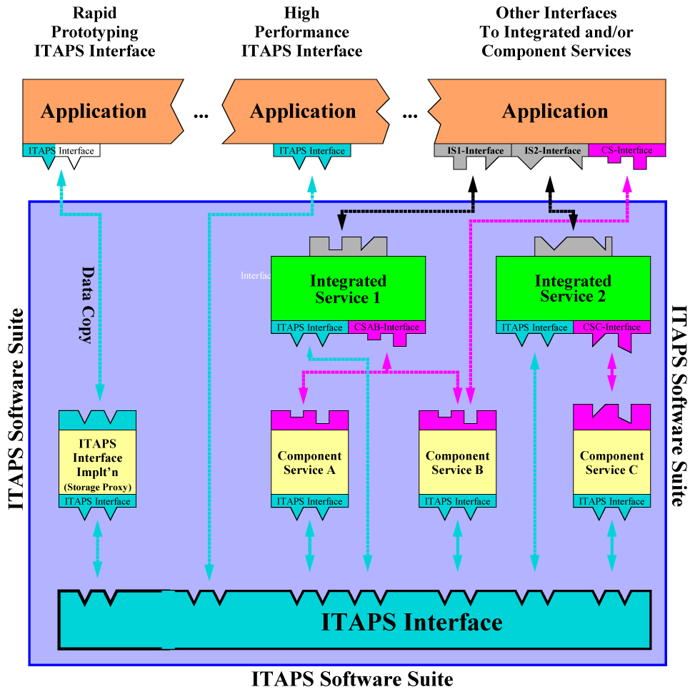

Strategies
for Integrating
ITAPS Software with your Application

This integration effort is represented by the blue-green boxes (labeled ITAPS-Interface) on the application. In addition, each Integrated- and Component-Service with the ITAPS Software Suite may also require a handful of function calls to be added to your application. This integration effort is represented by the gray and/or magenta boxes (labeled ISx-Interface and CS-Interface) on the application.
In integrating an application with the ITAPS Interfaces, there are basically two approaches. The first approach is suitable for rapid prototyping of capability but not necessarily very high performance. It requires the least amount of integration effort and utilizes a Storage-Proxy to serve as the intermediary for Components that need to interact with the Application's data. This approach essentially involves "building up" a copy of the application data inside an existing Implementation of the ITAPS Interfaces by making appropriate calls to the handful of methods in the ITAPS interfaces that enable an application to construct (as opposed to query) a mesh. Once this handful of calls is made, a copy of the Application's data is constructed inside the Storage Proxy from which it can then be interacted with by all other ITAPS software components.
The higher performance approach essentially componentizes the application by implementating the ITAPS interface to interact directly with the Application's data. Depending on the Components the Application wishes to use, a subset or a complete implementation of the ITAPS interface(s) may be necessary. The specific portions of the ITAPS Interfaces necessary to interact with different Component-Services are defined for each Component-Service. In this way, the Application becomse another component in the ITAPS Software Suite just like any other component.